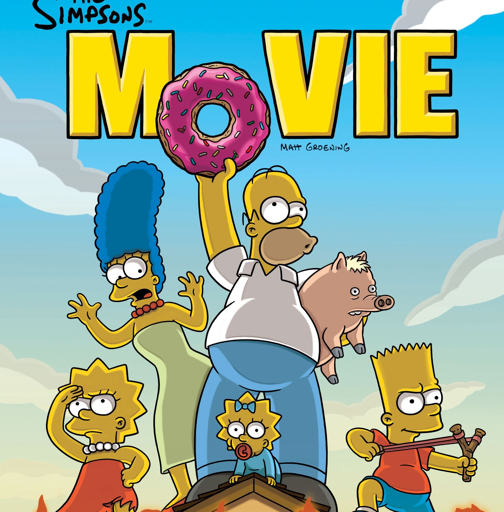

Les Simpson (The Simpsons) sont une série télévisée d'animation américaine1 pour adultes créée par Matt Groening et diffusée depuis le 17 décembre 1989 sur le réseau Fox. Elle met en scène les Simpson, stéréotype d'une famille de classe moyenne américaine2. Leurs aventures servent une satire du mode de vie américain. Les membres de la famille, sont Homer, Marge, Bart, Lisa, Maggie, ainsi que Abe, le père d'Homer. Depuis ses débuts, la série a récolté des dizaines de récompenses, dont trente-deux Primetime Emmy Awards, trente Annie Awards et un Peabody Award. Le Time Magazine du 31 décembre 1999 l'a par ailleurs désignée comme la meilleure série télévisée du xxe siècle et elle a obtenu une étoile sur le Walk of Fame d'Hollywood le 14 janvier 2000. « D'oh! », l'expression d'abattement d'Homer Simpson, est entrée dans la langue anglaise. Ce n'est pas le seul mot à être entré dans le dictionnaire anglais, embiggen (« engrandi » en français) est un mot inventé par les Simpson qui est aussi entré dans la langue anglaise. L'influence des Simpson s'exerce également sur d'autres.
Matt Groening
Dessinateur
Matthew Abram Groening, né le 15 février 1954 à Portland (Oregon), est un dessinateur, scénariste et producteur de télévision...Futurama.